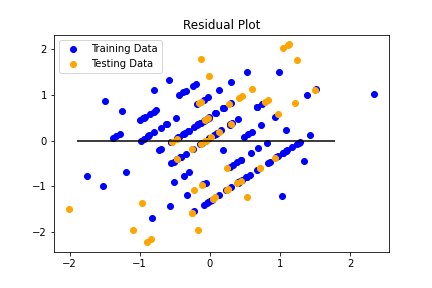

Using various data points as the target for ElasticNet we saw a low r score with higher mean squared error scores:
- Using points resulted in an MSE score of 1.3109391124789829 and R score of -0.5257216223360228.
- Using 'win' resulted in an MSE score of SCORE and R score of SCORE